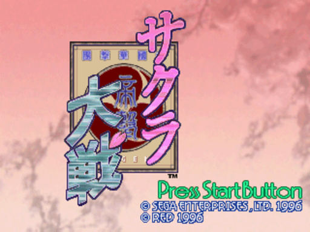
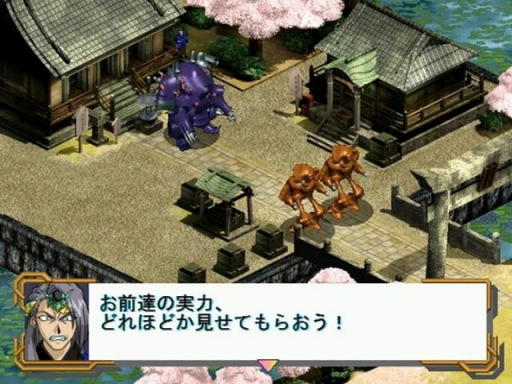

サクラ大戦
Spoiler-safe walkthrough and completion tracker for the Sega Dreamcast edition of サクラ大戦. Step into 太正 12 as 帝国華撃団・花組 captain 大神一郎, navigate timed LIPS conversations and free-roam exploration across all ten episodes, master square-grid 光武 battles, and complete every bromide, mini-game, and heroine ending.
| Japanese Title | サクラ大戦 |
|---|---|
| Release & Media | Sega Dreamcast (May 25, 2000, 2 GD-ROM discs, M2 port, Memorial Pack reissue Jan 17, 2002) |
| Disc Split | Disc 1 covers Episodes 1 through 7, and Disc 2 covers Episodes 8 through 10 |
| Dreamcast Upgrades | 640x480 high-resolution UI and portraits, MPEG Softdec animated cutscenes, Purupuru Pack vibration, VMU 5+ blocks, fast loading, and Clear Save carry-over to サクラ大戦2 |
| Story & Endings | 10 Episodes and 6 individual heroine endings plus the Grand Finale reward |
| Post-Game Extras | 帝劇の長い一日 with 7 mini-games, 13+ bromides, quiz, and こいこい大戦 |
This guide covers the 2000 Dreamcast port developed by M2 from the 1996 Sega Saturn original. Its 10-episode structure, square-grid tactical battles, かばう limit of eight uses per stage, timed LIPS prompts, and mini-game roster match the Saturn core while adding crisp 640x480 visuals, Softdec cutscenes, and cancel-move controls.
The 2003 PlayStation 2 remake サクラ大戦 〜熱き血潮に〜 is a separate 12-chapter rebuild using the ARMS free-movement battle engine, Analog LIPS, and added side episodes. Strategies, episode numbers, and bromide locations from the PS2 remake apply strictly to that release.


Section Hub & Completion Trackers
Beginner Tips
Essential habits for LIPS pacing, sound chimes, save anchors, and combat safety.
Play Order & Endings
Optimal route order, Episode 8 branch saves, and Clear Data carry-over.
Missables
Episode-locked bromides, timed hallway moves, and secret triggers.
Episodes 1 to 10
Spoiler-safe step-by-step walkthrough for every free-roam, LIPS, and battle.
Heroines & Combat Roles
Dialogue tendencies, attack ranges, special moves, and battle pairings.
Bromides & Extras
Regular and New Year bromides, mini-game targets, and Long Day unlocks.